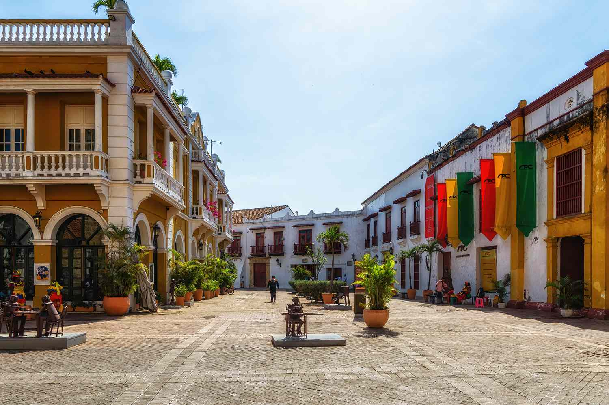

Galeria



Explore a rica e diversificada cultura colombiana.
Conheça a história fascinante da Colômbia.
Descubra as maravilhas naturais da Colômbia.
A Colômbia possui uma rica história que remonta às civilizações indígenas, como os muiscas e os taironas. O país conquistou sua independência da Espanha em 1810.
A cultura colombiana é uma vibrante mistura de influências indígenas, africanas e espanholas. A música, especialmente o vallenato e a cumbia, é uma parte vital da identidade cultural do país.
A Colômbia é conhecida por sua diversidade geográfica, incluindo montanhas, florestas tropicais e costas caribenhas e do Pacífico. O Parque Nacional Natural Tayrona é um dos destinos turísticos mais icônicos.
A economia colombiana é uma das mais diversificadas da América Latina, com setores como petróleo, café, flores e turismo desempenhando papéis significativos.
A Colômbia tem uma população de aproximadamente 51 milhões de pessoas, caracterizada por uma rica diversidade étnica e cultural. Bogotá, a capital, é o centro econômico e cultural do país.